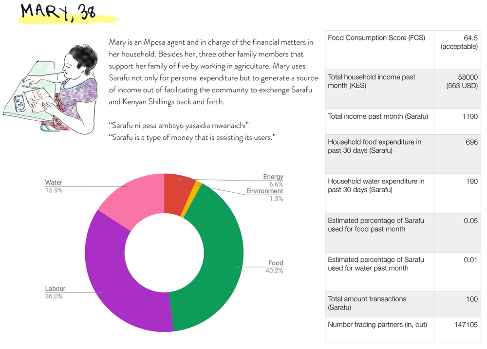
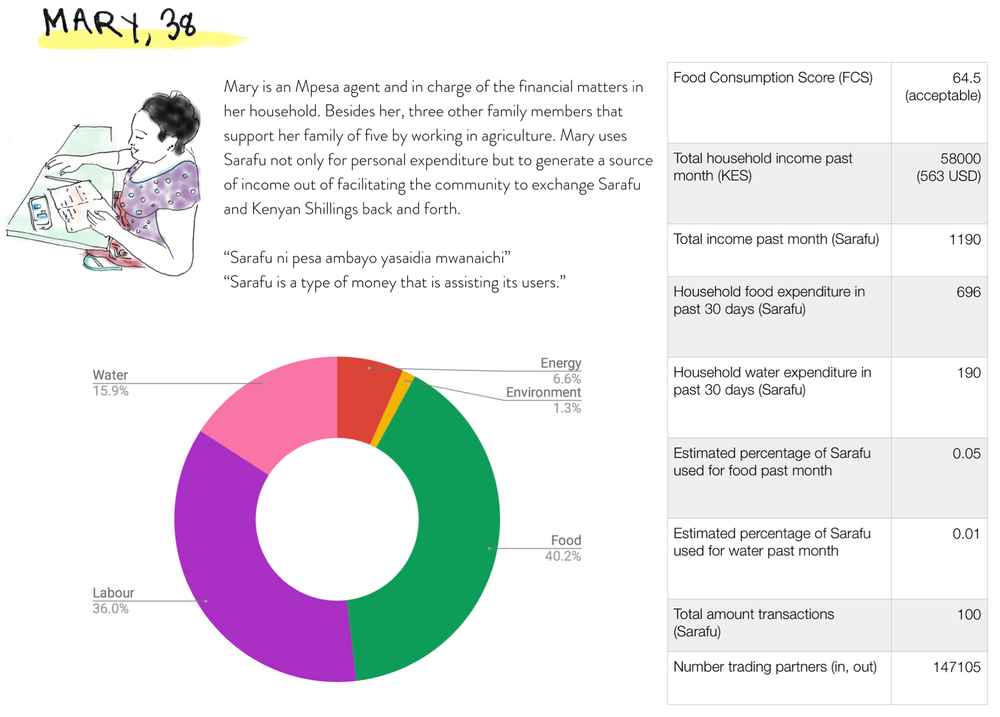

The people behind the transactions: a peek into the data of Kenya's most active Community Curren

Sarafu stands at the fore-front of digital community currencies offering novel ways to learn about the inner workings of local exchange systems and study their impact hands-on.

Ndegwa lives in Peku, a rural village in Western Kenya, and supports his family of seven by selling peas and chicken to the community. The area, he explains, is challenged by seasonal droughts. With a high dependency on agriculture as a main source of income, he believes that this is perhaps one of the reasons why poverty, unemployment and food insecurity are considerable challenges in his community.
In early 2019, Ndegwa started covering his daily expenses with not only Kenyan Shillings but also Sarafu. Sarafu is a network of community currencies operating in several slums and marginalized rural communities across Kenya. The community in Peku is using the local Sarafu token called Miyani, which is one of the most active in the network. Charging other users half in Kenyan Shillings (and the other half in Miyani), Miyani has helped Ndegwa to provide greater access to his products, gain more customers and save Kenyan Shillings for bigger investments beyond his daily consumption.
The Sarafu Network is one of the first community currencies to switch to a digital, blockchain-based model and make it work on the ground. In the last eight months, more than 4000 users have set up a Sarafu wallet and have traded up to 500,000 Sarafu tokens per week. When the network of community currencies went digital, last year, it allowed its users to exchange Sarafu on any type of phone and in-between participating communities. Thus, making a prime case of how digital community currencies can help create resilient local economies in practice.
Sarafu usage compared to household income in Kenyan Shillings differs widely across its users — some users seem to be substituting almost all of their income with Sarafu, others only a small percentage. The average Sarafu user in Miyani has around 5 other businesses they trade with and has made, rather irregularly, about 24 transactions in the past eight months. Ndegwa is part of a smaller, more active circuit of users. With an average of around 150 transactions per user this smaller set of users is driving the Sarafu trade volume (Diagram 1).
Diagram 1: Users against transaction volume - All Time

Mary is an agent in Ndegwa´s community. She uses Sarafu to generate a source of income by facilitating the community to exchange Sarafu and Kenyan Shillings back and forth.

Besides her, three other family members support her family by working in agriculture. The users in Miyani and Peku come to her to exchange their Kenyan Shillings for Sarafu to be able to buy the community-produced maize flour once their own stacks of maize have run out and to save Sarafu in their savings groups. To her it seems like Sarafu has been given the specific role to facilitate the trade of both maize flour and treated water within the community.
Sarafu appears to mobilize the local food and agriculture sectors. Almost half of the Sarafu trade volume is directed to users selling food and water (Diagram 2). Particularly, locally farmed products, vegetables, fish and traditional pastries are top items to be traded. In a small sample of 21 Sarafu users we find that on average 7% of the monthly food products are purchased with Sarafu and 1% of their monthly water expenditure is substituted with Sarafu.
Diagram 2: Almost half of the Sarafu expenditure is directed to users selling food or water

The Food Consumption Score (FCS) provides a common measure for food security that integrates dietary diversity and the frequency of food consumption weighted by the relative nutritional importance of the food consumed. According to the FCS over half of the users of the same sample show consumption patterns that are considered borderline or poor. Daily consumption of oil and sugar are very common. Meat, fish and vegetables can only be accessed on an irregular basis, thus, leaving most of the consumption to the main staple, maize. A community currency like Sarafu opens up new channels of local trade and help facilitate access to nutritious and sufficient food, thereby, supporting the Sustainable Development Goals from the bottom-up.

“Sarafu represents the people in Miyani and more people are needed so that we can do more business and save in our chamas (savings groups)” reports Dzame during her interview in Yowani, a village within walking distance to the main market in Miyani. The data across the 21 user profiles suggests that the Miyani Token provides a fruitful economic and social environment for a community currency to foster new avenues of exchange. Dzame is among the majority of the Sarafu-users interviewed that have lived in and around Miyani for more than 20 years. Almost all sell self-produced goods such as food, water or firewood to the community and their share of goods and services bought within the area is extremely high. Whilst this suggests rather traditional and stagnant economic patterns, it may be the closed economic loop that provides the necessary grip for a community currency to circulate more seamlessly and thereby stimulate local production and consumption.
Both, the maize mill as well as local water tanks, have been externally placed into the community to seed local demand. A community farming project connected to a cooperative mill generates a maize reserve for the community and provides a good example for how agriculture projects can be connected to a complementary currency like the Sarafu Network. This suggests that using a local medium of exchange to facilitate collective farming can make a firm foundation for sustained local access to food. However, community currencies only become a long term sustainable tool themselves once the local circulation no longer depends primarily on a single business like the externally supported maize mill.
Both, the maize mill as well as local water tanks, have been externally placed into the community to seed local demand. A community farming project connected to a cooperative mill generates a maize reserve for the community and provides a good example for how agriculture projects can be connected to a complementary currency like the Sarafu Network. This suggests that using a local medium of exchange to facilitate collective farming can make a firm foundation for sustained local access to food. However, community currencies only become a long term sustainable tool themselves once the local circulation no longer depends primarily on a single business like the externally supported maize mill.
Going digital not only opens up a range of new, unexplored ways to exchange with each other but also allows us to learn about the inner workings of a community currency and how it can help communities address the challenges they face. With the field of digital community currencies still being relatively new, Sarafu provides a rare opportunity to trace exchange relations and study how community currencies impact the local economy and address under-utilized resources. How will the duration of usage and size of the network affect Sarafu? How are Sarafu and the Kenyan Shilling working alongside each other? And which complementary currency designs ensure just, equitable and self-sufficient implementations? Testing and understanding these questions are some of the exciting ways in which researchers can support community communities on the ground and help build networks of local thriving economies.
P.S. A peek into the data - The following user-profiles spotlight how the community interacts with Sarafu:
 


#Miyani #complementarycurrency #impacts